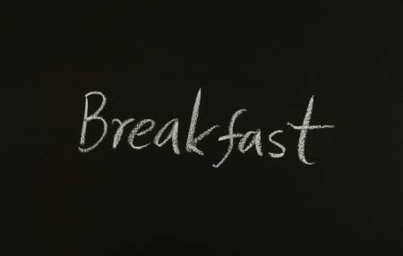
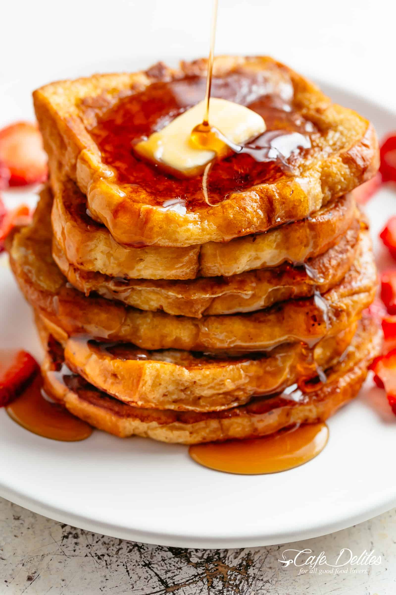
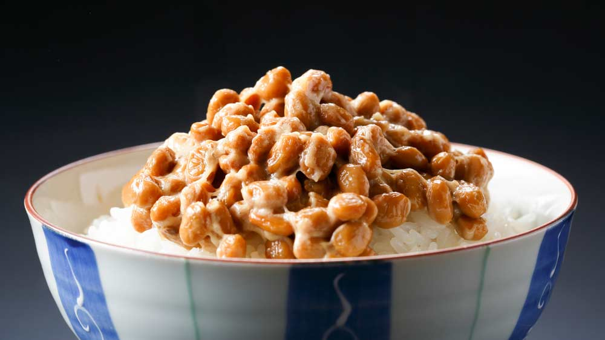
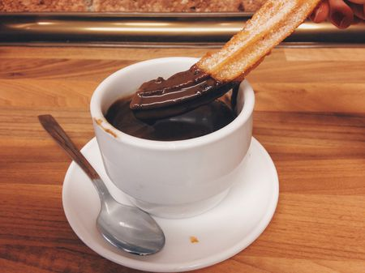

Differet Types of Breakfast in Different Countries
Choose a Country
Want to know the different types of breakfast there are in other countries?
Look no further, you have landed at the right place. All you have to do is choose one of the countries in the tabs.

United States
Buttermilk Pancakes
- 1 cup flour
- 1 tablespoon sugar
- 1 teaspoon baking powder
- 1/4 teaspoon baking soda
- 1/4 teaspoon salt
- 1 egg
- 1 buttermilk cup
- 2 tablespoon vegetable or canola oil
- Toppping you prefer

French Toast
- 10 to 12 slices of white bread
- 1 cup of milk
- 4 large eggs
- 1 teaspoon sugar
- 1 teaspoon salt
- Butter for frying
- Topping you prefer

Japan
Natto

Spain
Hot Chocolate with Churros
Hot Chocolate
- melt pieces of chocolate
- Cornstarch
- milk
- Cook in low heat until it is thick.
- Get a churro

Torrijas
- spanich bread pudding
- topped in sugar,cinnamon, or rich honey